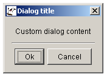

- java.lang.Object
-
- java.awt.Component
-
- java.awt.Container
-
- java.awt.Window
-
- java.awt.Dialog
-
- javax.swing.JDialog
-
- org.sm.smtools.swing.dialogs.JDefaultDialog
-
- All Implemented Interfaces:
- java.awt.event.ActionListener, java.awt.event.WindowListener, java.awt.image.ImageObserver, java.awt.MenuContainer, java.io.Serializable, java.util.EventListener, javax.accessibility.Accessible, javax.swing.RootPaneContainer, javax.swing.WindowConstants
- Direct Known Subclasses:
- JAboutBox, JCustomColorMapChooser, JDateChooser, JTimeChooser
public class JDefaultDialog extends javax.swing.JDialog implements java.awt.event.ActionListener, java.awt.event.WindowListenerTheJDefaultDialogclass is a baseclass for creating arbitrary dialog boxes.Note that a valid
I18NL10Ndatabase must be available!There are three types of dialog boxes available:
-
"Ok" dialog box

-
"Ok/Cancel" dialog box
-
Custom dialog box

Typically,
JDefaultDialogis subclassed, with several methods overridden. These methods control both the visual layout of the dialog box (custom dialog title and custom content area) and the actions that need to be taken upon user input. The dialog boxes can be modal or modeless, fixed size or resizable, directly activated or postponed. When the dialog box is shown, it is placed in the middle of the parent's frame.The overridable methods are called in the following order:
initialiseClass(Object[])getWindowTitle()getInitialDialogSize()constructMainPanel(JPanel)actionPerformed(ActionEvent)
The result of an "Ok/Cancel" type dialog box should be queried using the
cancelled()method.Important remark
Initialisation of member fields in the subclass is accomplished by overriding the
initialiseClass(Object[])method; the parameters are specified as an array ofObjects. These parameters are passed to the subclass in the call to the constructor, for example:MyDialogClass myDialogObject = new MyDialogClass( parentComponent, JDefaultDialog.EModality.kModal, JDefaultDialog.ESize.kResizable, JDefaultDialog.EType.kOkCancel, new Object[] {object1,object2}, JDefaultDialog.EActivation.kImmediately);Object[]array is constructed usingnew Object[] {object1,object2}. If no parameters are to be passed, you should specifynullfor the array.If the dialog box's activation was postponed (using the
JDefaultDialog(JFrame,EModality,ESize,EType,Object[],EActivation)constructor) for example for storing in the GUI's component cache, it should be reactivated using theactivate()method. Any initialisation that needs to occur during the reactivation process, can be performed by overriding theinitialiseDuringActivation()method.- Version:
- 11/12/2012
- Author:
- Sven Maerivoet
- See Also:
- Serialized Form
-
-
Nested Class Summary
Nested Classes Modifier and Type Class and Description static classJDefaultDialog.EActivationUseful constants to specify that the dialog box should be opened at the end of the constructor or if it should be postponed.static classJDefaultDialog.EModalityUseful constants to specify a modal or modelss dialog box.static classJDefaultDialog.ESizeUseful constants to specify a fixed or resizable dialog box.static classJDefaultDialog.ETypeUseful constants to specify an "Ok", "Ok/Cancel" or custm type dialog box.-
Nested classes/interfaces inherited from class javax.swing.JDialog
javax.swing.JDialog.AccessibleJDialog
-
Nested classes/interfaces inherited from class java.awt.Dialog
java.awt.Dialog.AccessibleAWTDialog, java.awt.Dialog.ModalExclusionType, java.awt.Dialog.ModalityType
-
Nested classes/interfaces inherited from class java.awt.Window
java.awt.Window.AccessibleAWTWindow, java.awt.Window.Type
-
-
Field Summary
-
Fields inherited from class javax.swing.JDialog
accessibleContext, rootPane, rootPaneCheckingEnabled
-
Fields inherited from class java.awt.Component
BOTTOM_ALIGNMENT, CENTER_ALIGNMENT, LEFT_ALIGNMENT, RIGHT_ALIGNMENT, TOP_ALIGNMENT
-
-
Constructor Summary
Constructors Constructor and Description JDefaultDialog(javax.swing.JFrame applicationFrame, JDefaultDialog.EModality modality, JDefaultDialog.ESize size, JDefaultDialog.EType type, java.lang.Object[] parameters)Constructs aJDefaultDialogobject with the specified characteristics.JDefaultDialog(javax.swing.JFrame applicationFrame, JDefaultDialog.EModality modality, JDefaultDialog.ESize size, JDefaultDialog.EType type, java.lang.Object[] parameters, JDefaultDialog.EActivation activation)Constructs aJDefaultDialogobject with the specified characteristics.
-
Method Summary
All Methods Static Methods Instance Methods Concrete Methods Modifier and Type Method and Description voidactionPerformed(java.awt.event.ActionEvent e)The dialog box's action listener.voidactivate()Displays the dialog box on the screen, thereby 'activating' it.booleancancelled()Indicates whether or not the user has cancelled the dialog box.protected voidconstructMainPanel(javax.swing.JPanel mainPanel)Allows the creation of custom content in the dialog box.voiddisableAutoPositioning()protected java.awt.DimensiongetInitialDialogSize()Returns the initial screen size of the dialog box.static java.awt.PointgetOnScreenLocation(java.awt.Point requestedLocation, java.awt.Dimension size)Returns a location that guarantees that a dialog is fully shown within the screen's boundaries.protected java.lang.StringgetWindowTitle()Returns the window title of the dialog box.protected voidinitialiseClass(java.lang.Object[] parameters)Allows custom initialisation of a subclass's member fields.protected voidinitialiseDuringActivation()Allows custom initialisation to be performed during the dialog box's reactivation.booleanisShown()Returns whether or not the dialog is shown.voidwindowActivated(java.awt.event.WindowEvent e)A method from the dialog box's window listener.voidwindowClosed(java.awt.event.WindowEvent e)A method from the dialog box's window listener.voidwindowClosing(java.awt.event.WindowEvent e)A method from the dialog box's window listener.voidwindowDeactivated(java.awt.event.WindowEvent e)A method from the dialog box's window listener.voidwindowDeiconified(java.awt.event.WindowEvent e)A method from the dialog box's window listener.voidwindowIconified(java.awt.event.WindowEvent e)A method from the dialog box's window listener.voidwindowOpened(java.awt.event.WindowEvent e)A method from the dialog box's window listener.-
Methods inherited from class javax.swing.JDialog
addImpl, createRootPane, dialogInit, getAccessibleContext, getContentPane, getDefaultCloseOperation, getGlassPane, getGraphics, getJMenuBar, getLayeredPane, getRootPane, getTransferHandler, isDefaultLookAndFeelDecorated, isRootPaneCheckingEnabled, paramString, processWindowEvent, remove, repaint, setContentPane, setDefaultCloseOperation, setDefaultLookAndFeelDecorated, setGlassPane, setJMenuBar, setLayeredPane, setLayout, setRootPane, setRootPaneCheckingEnabled, setTransferHandler, update
-
Methods inherited from class java.awt.Dialog
addNotify, getModalityType, getTitle, hide, isModal, isResizable, isUndecorated, setBackground, setModal, setModalityType, setOpacity, setResizable, setShape, setTitle, setUndecorated, setVisible, show, toBack
-
Methods inherited from class java.awt.Window
addPropertyChangeListener, addPropertyChangeListener, addWindowFocusListener, addWindowListener, addWindowStateListener, applyResourceBundle, applyResourceBundle, createBufferStrategy, createBufferStrategy, dispose, getBackground, getBufferStrategy, getFocusableWindowState, getFocusCycleRootAncestor, getFocusOwner, getFocusTraversalKeys, getIconImages, getInputContext, getListeners, getLocale, getModalExclusionType, getMostRecentFocusOwner, getOpacity, getOwnedWindows, getOwner, getOwnerlessWindows, getShape, getToolkit, getType, getWarningString, getWindowFocusListeners, getWindowListeners, getWindows, getWindowStateListeners, isActive, isAlwaysOnTop, isAlwaysOnTopSupported, isAutoRequestFocus, isFocusableWindow, isFocusCycleRoot, isFocused, isLocationByPlatform, isOpaque, isShowing, isValidateRoot, pack, paint, postEvent, processEvent, processWindowFocusEvent, processWindowStateEvent, removeNotify, removeWindowFocusListener, removeWindowListener, removeWindowStateListener, reshape, setAlwaysOnTop, setAutoRequestFocus, setBounds, setBounds, setCursor, setFocusableWindowState, setFocusCycleRoot, setIconImage, setIconImages, setLocation, setLocation, setLocationByPlatform, setLocationRelativeTo, setMinimumSize, setModalExclusionType, setSize, setSize, setType, toFront
-
Methods inherited from class java.awt.Container
add, add, add, add, add, addContainerListener, applyComponentOrientation, areFocusTraversalKeysSet, countComponents, deliverEvent, doLayout, findComponentAt, findComponentAt, getAlignmentX, getAlignmentY, getComponent, getComponentAt, getComponentAt, getComponentCount, getComponents, getComponentZOrder, getContainerListeners, getFocusTraversalPolicy, getInsets, getLayout, getMaximumSize, getMinimumSize, getMousePosition, getPreferredSize, insets, invalidate, isAncestorOf, isFocusCycleRoot, isFocusTraversalPolicyProvider, isFocusTraversalPolicySet, layout, list, list, locate, minimumSize, paintComponents, preferredSize, print, printComponents, processContainerEvent, remove, removeAll, removeContainerListener, setComponentZOrder, setFocusTraversalKeys, setFocusTraversalPolicy, setFocusTraversalPolicyProvider, setFont, transferFocusDownCycle, validate, validateTree
-
Methods inherited from class java.awt.Component
action, add, addComponentListener, addFocusListener, addHierarchyBoundsListener, addHierarchyListener, addInputMethodListener, addKeyListener, addMouseListener, addMouseMotionListener, addMouseWheelListener, bounds, checkImage, checkImage, coalesceEvents, contains, contains, createImage, createImage, createVolatileImage, createVolatileImage, disable, disableEvents, dispatchEvent, enable, enable, enableEvents, enableInputMethods, firePropertyChange, firePropertyChange, firePropertyChange, firePropertyChange, firePropertyChange, firePropertyChange, firePropertyChange, firePropertyChange, firePropertyChange, getBaseline, getBaselineResizeBehavior, getBounds, getBounds, getColorModel, getComponentListeners, getComponentOrientation, getCursor, getDropTarget, getFocusListeners, getFocusTraversalKeysEnabled, getFont, getFontMetrics, getForeground, getGraphicsConfiguration, getHeight, getHierarchyBoundsListeners, getHierarchyListeners, getIgnoreRepaint, getInputMethodListeners, getInputMethodRequests, getKeyListeners, getLocation, getLocation, getLocationOnScreen, getMouseListeners, getMouseMotionListeners, getMousePosition, getMouseWheelListeners, getName, getParent, getPeer, getPropertyChangeListeners, getPropertyChangeListeners, getSize, getSize, getTreeLock, getWidth, getX, getY, gotFocus, handleEvent, hasFocus, imageUpdate, inside, isBackgroundSet, isCursorSet, isDisplayable, isDoubleBuffered, isEnabled, isFocusable, isFocusOwner, isFocusTraversable, isFontSet, isForegroundSet, isLightweight, isMaximumSizeSet, isMinimumSizeSet, isPreferredSizeSet, isValid, isVisible, keyDown, keyUp, list, list, list, location, lostFocus, mouseDown, mouseDrag, mouseEnter, mouseExit, mouseMove, mouseUp, move, nextFocus, paintAll, prepareImage, prepareImage, printAll, processComponentEvent, processFocusEvent, processHierarchyBoundsEvent, processHierarchyEvent, processInputMethodEvent, processKeyEvent, processMouseEvent, processMouseMotionEvent, processMouseWheelEvent, remove, removeComponentListener, removeFocusListener, removeHierarchyBoundsListener, removeHierarchyListener, removeInputMethodListener, removeKeyListener, removeMouseListener, removeMouseMotionListener, removeMouseWheelListener, removePropertyChangeListener, removePropertyChangeListener, repaint, repaint, repaint, requestFocus, requestFocus, requestFocusInWindow, requestFocusInWindow, resize, resize, revalidate, setComponentOrientation, setDropTarget, setEnabled, setFocusable, setFocusTraversalKeysEnabled, setForeground, setIgnoreRepaint, setLocale, setMaximumSize, setName, setPreferredSize, show, size, toString, transferFocus, transferFocusBackward, transferFocusUpCycle
-
-
-
-
Constructor Detail
-
JDefaultDialog
public JDefaultDialog(javax.swing.JFrame applicationFrame, JDefaultDialog.EModality modality, JDefaultDialog.ESize size, JDefaultDialog.EType type, java.lang.Object[] parameters)Constructs aJDefaultDialogobject with the specified characteristics.Note that the dialog box is activated (i.e., made visible) at the end of the constructor.
- Parameters:
applicationFrame- the frame in which this dialog box is to be displayedmodality- anEModalityflag to indicate if the dialog box should be modal or modelesssize- anESizeflag indicating whether or not the dialog box should be resizabletype- the type of the dialog box ("Ok", "Ok/Cancel" or custom)parameters- an array of objects which are passed to theinitialiseClass(Object[])method- See Also:
JDefaultDialog(JFrame,EModality,ESize,EType,Object[],EActivation),JDefaultDialog.EModality,JDefaultDialog.ESize,JDefaultDialog.EType
-
JDefaultDialog
public JDefaultDialog(javax.swing.JFrame applicationFrame, JDefaultDialog.EModality modality, JDefaultDialog.ESize size, JDefaultDialog.EType type, java.lang.Object[] parameters, JDefaultDialog.EActivation activation)Constructs aJDefaultDialogobject with the specified characteristics.If
immediateActivationisfalse, the dialog box should be made visible by explicitly calling theactivate()method.- Parameters:
applicationFrame- the frame in which this dialog box is to be displayedmodality- anEModalityflag to indicate if the dialog box should be modal or modelesssize- anESizeflag indicating whether or not the dialog box should be resizabletype- the type of the dialog box ("Ok", "Ok/Cancel" or custom)parameters- an array of objects which are passed to theinitialiseClass(Object[])methodactivation- anEActivationflag indicating whether or not the dialog box should be made visible at the end of the constructor- See Also:
JDefaultDialog(JFrame,EModality,ESize,EType,Object[]),JDefaultDialog.EModality,JDefaultDialog.ESize,JDefaultDialog.EType
-
-
Method Detail
-
actionPerformed
public void actionPerformed(java.awt.event.ActionEvent e)
The dialog box's action listener.Note that when overriding this method in a subclass, its parent should explicitly be called in order to guarantee the correct processing of the user's input ("Ok" and "Ok/Cancel" type of dialog boxes):
super.actionPerformed(e); // rest of method's code
- Specified by:
actionPerformedin interfacejava.awt.event.ActionListener- Parameters:
e- theActionEventthat is received
-
activate
public final void activate()
Displays the dialog box on the screen, thereby 'activating' it.This method only has an effect when the dialog box is not immediately activated at the time of the constructor.
- See Also:
initialiseDuringActivation()
-
cancelled
public boolean cancelled()
Indicates whether or not the user has cancelled the dialog box.For "Ok" and "Custom" type dialog boxes, this method always returns
false; note that it can be overridden in a subclass if custom behavior is needed (this may desirable for "Custom" type dialog boxes).For "Ok/Cancel" type dialog boxes, this method only returns
falseif the user has selected the "Ok" button.- Returns:
falsefor "Ok" and "Custom" type dialog boxes, and "Ok/Cancel" type dialog boxes if the user has selected the "Ok" button
-
constructMainPanel
protected void constructMainPanel(javax.swing.JPanel mainPanel)
Allows the creation of custom content in the dialog box.A subclass should typically create labels, inputfields, ... in the dialog boxes main panel, by overriding this method.
Note that the
mainPanelobject is already constructed!- Parameters:
mainPanel- the area of the dialog box that is reserved for custom content
-
disableAutoPositioning
public final void disableAutoPositioning()
-
getInitialDialogSize
protected java.awt.Dimension getInitialDialogSize()
Returns the initial screen size of the dialog box.In order to obtain a custom size for the dialog box, the caller should override this method (it returns
nullin the baseclass).- Returns:
- the initial screen size of the dialog box
-
getOnScreenLocation
public static java.awt.Point getOnScreenLocation(java.awt.Point requestedLocation, java.awt.Dimension size)Returns a location that guarantees that a dialog is fully shown within the screen's boundaries.- Parameters:
requestedLocation- the requested location to position the dialogsize- the size of the dialog- Returns:
- a location that guarantees that a dialog is fully shown within the screen's boundaries
-
getWindowTitle
protected java.lang.String getWindowTitle()
Returns the window title of the dialog box.In order to obtain a custom dialog title, the caller should override this method (it returns
nullin the baseclass).- Returns:
- the window title of the dialog box
-
initialiseClass
protected void initialiseClass(java.lang.Object[] parameters)
Allows custom initialisation of a subclass's member fields.Note that the caller should specify
nullif no parameters are specified.- Parameters:
parameters- an array ofObjects
-
initialiseDuringActivation
protected void initialiseDuringActivation()
Allows custom initialisation to be performed during the dialog box's reactivation.- See Also:
activate()
-
isShown
public final boolean isShown()
Returns whether or not the dialog is shown.Note that this method cannot be overridden!
- Returns:
trueif the dialog is shown,falseotherwise
-
windowActivated
public final void windowActivated(java.awt.event.WindowEvent e)
A method from the dialog box's window listener.Note that this method cannot be overridden!
- Specified by:
windowActivatedin interfacejava.awt.event.WindowListener- Parameters:
e- theWindowEventthat is received
-
windowClosed
public final void windowClosed(java.awt.event.WindowEvent e)
A method from the dialog box's window listener.Note that this method cannot be overridden!
- Specified by:
windowClosedin interfacejava.awt.event.WindowListener- Parameters:
e- theWindowEventthat is received
-
windowClosing
public final void windowClosing(java.awt.event.WindowEvent e)
A method from the dialog box's window listener.Note that this method cannot be overridden!
- Specified by:
windowClosingin interfacejava.awt.event.WindowListener- Parameters:
e- theWindowEventthat is received
-
windowDeactivated
public final void windowDeactivated(java.awt.event.WindowEvent e)
A method from the dialog box's window listener.Note that this method cannot be overridden!
- Specified by:
windowDeactivatedin interfacejava.awt.event.WindowListener- Parameters:
e- theWindowEventthat is received
-
windowDeiconified
public final void windowDeiconified(java.awt.event.WindowEvent e)
A method from the dialog box's window listener.Note that this method cannot be overridden!
- Specified by:
windowDeiconifiedin interfacejava.awt.event.WindowListener- Parameters:
e- theWindowEventthat is received
-
windowIconified
public final void windowIconified(java.awt.event.WindowEvent e)
A method from the dialog box's window listener.Note that this method cannot be overridden!
- Specified by:
windowIconifiedin interfacejava.awt.event.WindowListener- Parameters:
e- theWindowEventthat is received
-
windowOpened
public final void windowOpened(java.awt.event.WindowEvent e)
A method from the dialog box's window listener.Note that this method cannot be overridden!
- Specified by:
windowOpenedin interfacejava.awt.event.WindowListener- Parameters:
e- theWindowEventthat is received
-
-